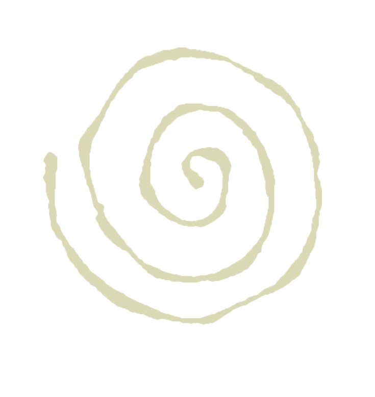

Circling The Drain Press Dear Reader,
It seems arbitrary to give a website an introduction; after all, it does not have to abide by laws such as that of a book or letter...Perhaps a webpage dedicated to writing deserves it's own rules...mwahahahaha.
Before this blog, I had my pinboard. The issue with it was that, everytime I had to make a new post, I would have to write it down on VSCode which as we know is not a great text editor...Hence, my pinboard was stagnant for a lot of the year because I was heavily unmotivated to deal with that.
My next option was to use are.na blocks, but that would prove difficult for a few reasons: Are.na blocks aren't great text editors either. I was once writing a very compassionate, sincere essay on are.na, I was typing away and accidentally pressed a key that I shouldnt have. BOOM, all my writing, gone. I took a break from arena after that...
Finally, the blogs most recent evolution, is this. using markdown files and images embedded through are.na links enables me to be able to edit text in a less precarious, more acessible way.
You will find that this blog is a mixure of my last pinboard, riddled with saparatic and random publishings from throughout the year, as well as others that are more consice. Please bear with me as I am working on a system to organize them. For now, Enjoy the mess I've made over time.
Lotus,
—Runa